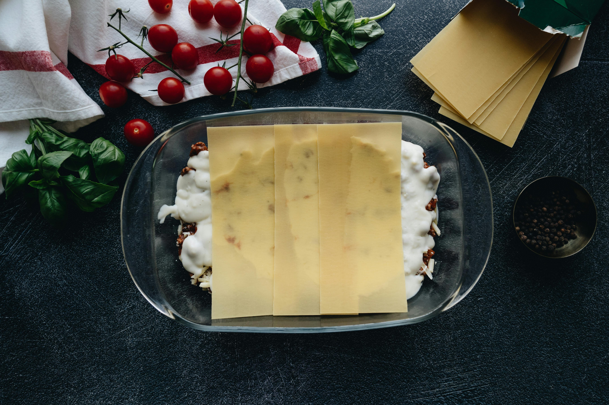

Home

Published: Jan 15, 2026 · Modified: Feb 5, 2026 by Tina ·
There is something incredibly comforting about a warm, cheesy lasagna bubbling with fresh vegetables and rich marinara sauce, and that's exactly what makes this Crockpot Vegetable Lasagna Recipe a beloved classic in my kitchen. This dish brings together layers of tender noodles, a savory ricotta and basil mixture, and a vibrant medley of zucchini, mushrooms, and spinach all cooked slowly to perfection in your crockpot. It's like letting your slow cooker do the loving work while filling your home with irresistible aromas. Whether you're a seasoned lasagna lover or exploring vegetarian options, this recipe transforms simple ingredients into a mouthwatering feast with minimal fuss and maximum flavor.
Ingredients You"ll Need
- Chopped fresh basil (⅓ cup): Adds brightness and a fragrant herbal note that lifts the entire dish.
- Ricotta cheese (15 ounces): Provides creamy richness that balances the vegetables beautifully.
- Large eggs (2): Bind the ricotta mixture for that perfect smooth, yet structured texture.
- Garlic powder (1 teaspoon): Enhances savory depth without overpowering.
- Kosher salt (1 teaspoon): Brings out the natural flavors of each layer.
- Freshly cracked black pepper (½ teaspoon): Adds mild heat and complexity.
How to Make Crockpot Vegetable Lasagna Recipe
- Prepare the Ricotta Mixture
- Layer the Lasagna in the Crockpot
- Repeat the Layers and Finish
- Prepare for Slow Cooking